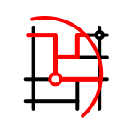
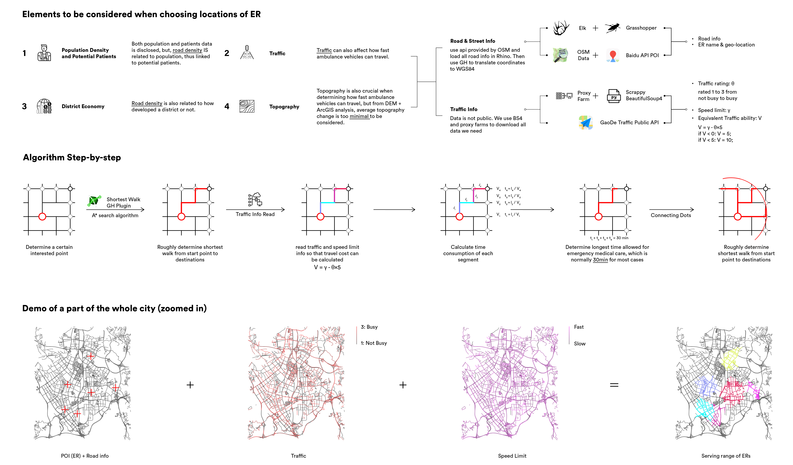
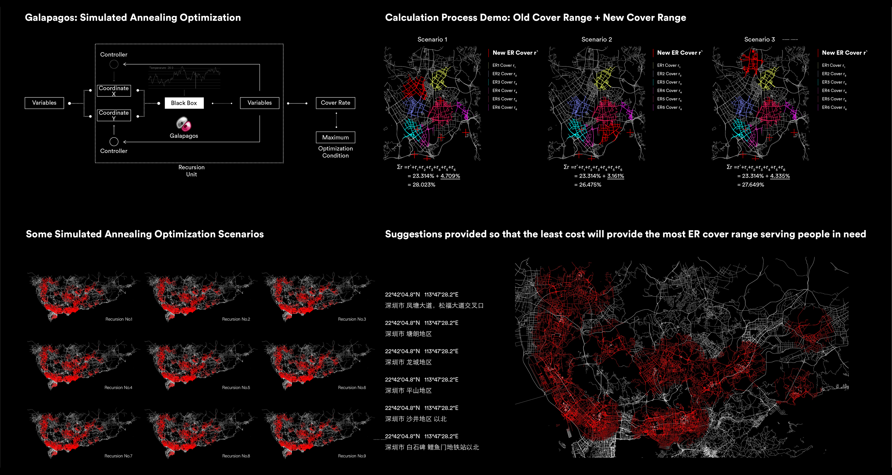

Evaluation and Optimization of Pre-hospital First Aid System Based on Simulated Annealing Algorithm
Shenzhen As an Example
Intro
In China, Shenzhen is a megacity with a relatively complete medical emergency system. This article tries to use Shenzhen as an example to analyze and evaluate the first-aid ability of the city's pre-hospital emergency system. The analysis process uses Python, Grasshopper, Simulated Annealing algorithm and other tools to crawl first-aid information, clean the data and calculate EMEC(Effective Medical Emergency Coverage). It is believed that the Shenzhen pre-hospital emergency system still has room to improve its EMEC and thus can shorten its average emergency response time. At the end of the study, the most reasonable geographic location for the new first aid points was calculated based on the annealing algorithm optimization.
Role
Data Analyzer, Coder
location
Southeast University
Toolkits
Python, Rhino, Grasshopper, Adobe Illustrator
Research Proposal
introduction
Emergency medical care is playing a crucial role in both urban and rural medical systems. High-quality emergency medical services can not only provide urgent care for the general public in urban environment, but also protect the lives and health of people living in rural areas in response to various sudden illnesses, accidents and natural and man-made disasters.
At present, China's emergency medical service is far behind the world's advanced level, which not only seriously restricts the development of the society, but also costs a lot for the whole society to deal with various emergencies. For instance, although China's private car ownership accounts for only 2% of the world's total, China's deaths due to traffic accidents account for about 20% of the world [1]. In addition, China's traffic accident fatality rate is about 27.3%. In contrast, the United States is 1.3%, while Japan is only 0.9% [2]. One of the reasons behind is that in all kinds of sudden illnesses, accidents and disasters, the injured patients in developed countries have received more timely and effective ambulance and medical treatments than in China.
The existing emergency medical facilities in China are mainly composed of emergency department affiliated to public hospitals, and most of the hospitals are separated in the old urban area of the city. The reconstruction and expansion work are mainly limited to the vicinity of the original facilities. On the other hand, a large number of residential areas in the new urban area are being built under the trend of urban sprawl, and the number of residents living away from the old city is growing rapidly. The shortage of medical facilities in the suburbs or urban new areas will greatly increase the chances of emergency medical treatment being delayed.
In general, the time ambulance takes from the scene where the patient calls for help to the nearest emergency room is called the reaction time, which also indicates a 10-minutes maximum reaction time in urban areas or less or a 20-minutes in suburbs. If a high level of pre-hospital first aid system is to be achieved, a shorter average response time must be guaranteed. In the world where the first-aid system takes the lead, the average emergency response time is mostly within the range of 5 to 7 minutes. At present, the average emergency response time of most cities in China is more than 10 minutes, indicating a certain room for optimization. The average emergency response time is often too long due to insufficient coverage of medical emergency rooms. In this way, ambulance often needs to go beyond designed service to complete the first aid task, and the emergency response time is thus delayed. Therefore, optimizing the locations of medical emergency rooms, whether built or to be built, is of great significance.

Research Approaches
Research approaches
Shenzhen is located south of Guangdong with a land area of 1997.47 square kilometers. It has ten administrative districts. As of the end of 2017, the resident population totaled 12.528 million. The pre-hospital medical emergency system in Shenzhen is mainly based on the first-aid emergency rooms together with the emergency network hospital. At present, there are 86 first-aid emergency rooms in Shenzhen.
Firstly, the status quo of Shenzhen emergency medical system is analyzed. The spatial distribution of first-aid emergency rooms as well as the first-aid coverage analysis of different departments are analyzed using Tableau, Grasshopper and Python etc., evaluating the medical emergency system as a whole. Secondly, by coding and using algorithms, the overall coverage rate of the medical system is to be improved given the number of supplementary emergency rooms by calculating and recommending their geographic locations. Finally, another evaluation will be conducted once again on the improvement of the Shenzhen emergency medical system after joining the new sites, and provide suggestions for improvement based on calculation and evaluation result.

Algorithms and optimizations
simulated annealing optimization
The simulated annealing algorithm is used to optimize the best EMEC that I can achieve.

The Galapagos Calculator is a simulated annealing algorithm implementation plug-in for the Rhino + Grasshopper platform. During calculation, the number of new first-aid sites should be specified first before feeding to Galapagos. Also, potential emergency room points will be randomly generated before the calculation. First the calculator randomly moves these dots and then calculates the new coverage. If the new coverage is improved compared to the old coverage, the random movement is inherited; if it is not promoted, the random movement is discarded, returning to the previous step and regenerating a new random movement to re-run the loop. While continuously inheriting the previous algorithm and performing new operations based on this, the Galapagos operator will also perform an ‘annealing’ operation on a random record, jumping out of the inherited result and trying to see if there is a more global optimization, as is mentioned before.
Due to insufficient computing power, the algorithm is terminated after 2000 iterations, and the best result obtained at the termination is selected. The five new first aid locations generated based on locations are as follows:
8 minutes emergency response time:
1. Haide 3rd Road, Nanshan District, Shenzhen, Guangdong Province, near Vientiane City Shopping Center
2. High-tech Zone No. 10, High-tech Zone Cultural and Sports Activity Center
3. No. 3, Shajing Street, Bao'an District, Shenzhen, near Shajing People's Hospital, Bao'an District, Shenzhen
4. No. 187 Guanlan Avenue, Longhua District, Shenzhen, west, near the Central Hospital of Longhua District, Shenzhen
5. Near the Kindergarten Center Kindergarten, No. 3 Xiushan Road, Pingshan District, Shenzhen, Guangdong Province, 200m away from Shenzhen Jianlong Hospital
15 minutes emergency response time:
1. No. 0270 Qianhai Road, Nanshan District, Shenzhen Nanshan Experimental Education Group Yulin Primary School
2. No. 8 Keyu Road, Guangming District, Shenzhen, China Opposite to the People's Government of Guangming District, Shenzhen
3. No. 1478, Sightseeing Road, Guangming District, Shenzhen
4. Vanke East Coast Community Near Shenzhen People's Hospital of Yantian District (Mesha Branch) about 200m
5. Jiajiale Supermarket (Laoweidian) Opposite to the open space Jinniu Middle Road and Lanjingzhong Road intersection 100 meters northbound from Shenzhen Sami Medical Center (private hospital) about 200m
According to the results given above calculated by algorithm, we can also find with intuitive perception that the algorithm often chooses a geographical location with high accessibility, such as shopping malls, government agencies, etc., or the locations which are not far away from built hospitals but no emergency or hospital with the first aid function but either not registered with map information provider yet or run by private sectors. Therefore, it can be roughly judged that the algorithm has certain accuracy and feasibility.
Conclusion
Conclusion
The existing first-aid system in Shenzhen is relatively complete while the effective medical emergency coverage (EMEC) is relatively low, which leads to the fact that the average emergency response time does not meet the 8-minute first-aid requirement. For departments of fractures, acute abdomen, and severe asthma, the system has poor response ability within 8 minutes, the coverage rate is about 30%, and the coverage within 15 minutes is about 70%. The response capacity is acceptable, but it still needs upgrade. Compared with other large cities in the world with better medical emergency systems, there is room for improvement.
In this context, algorithms such as simulated annealing algorithm are used to optimize and recommend reasonable locations for new hospitals, and to calculate the global optimal solutions for the five new emergency sites. After the calculation, the overall pre-hospital emergency network in Shenzhen has a significant increase in 8-minute coverage and 15-minute coverage.
At the same time, it is undeniable that the algorithm will also choose locations with good geographical locations, such as the city centers, CBD, etc. There is no doubt that these locations cannot be selected when considering geographical costs and other issues. Therefore, after algorithm generates the result, it also needs human intervention to consider the unreasonable selection point in the actual construction process in combination with the actual situation. In the actual project, maybe it is better to let the algorithm export results with more than 5 recommended points, and then consider the actual situations before removing some points.
It should be noted that the algorithm itself only chooses a simple algorithm optimization system. Although the accuracy has far exceeded the manual judgment based on greedy algorithms, it is still the traditional algorithm in the computer field both in speed and efficiency. In recent years, the rapid development of computers has made artificial intelligence based on neural networks possible. The biggest advantage of artificial intelligence is that when dealing with large data volume, such as land price, population, road capacity and other impact factors that have not been introduced in this research, there are advantages and efficiencies that traditional algorithms do not have. The programming easier to learn and can make the most of computing resources. In subsequent studies, artificial intelligence empowered by big data can also be introduced to replace traditional algorithms and thus making the results more accurate.